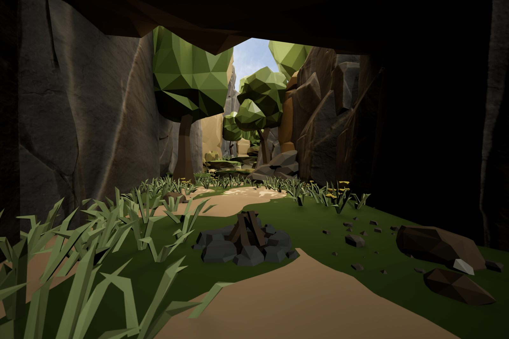
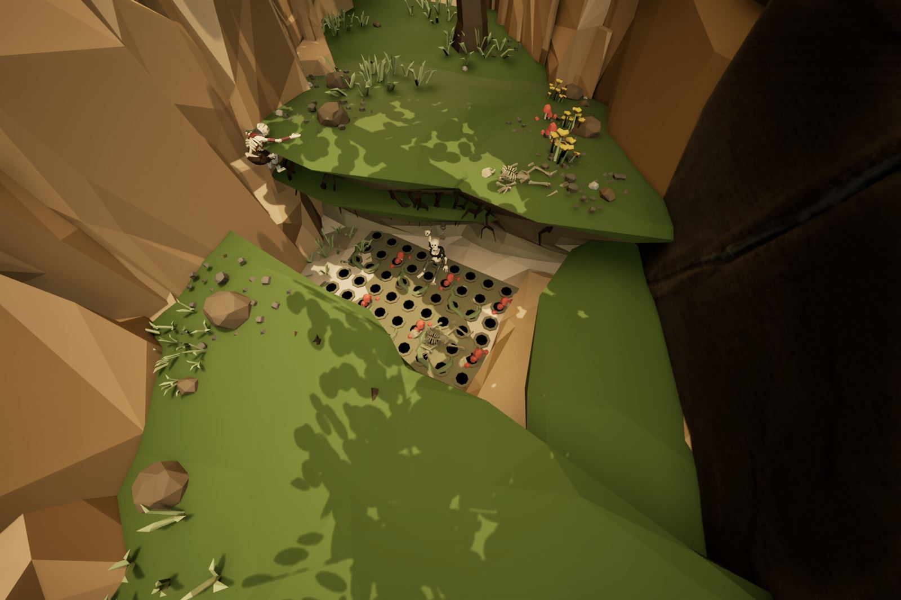
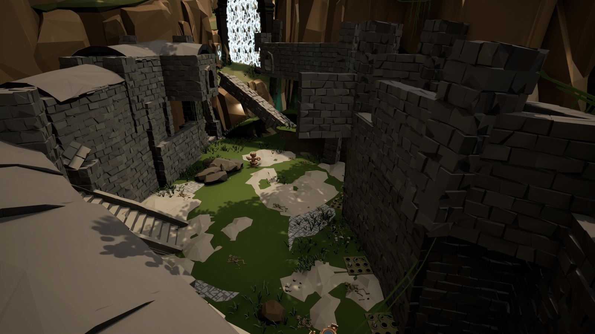
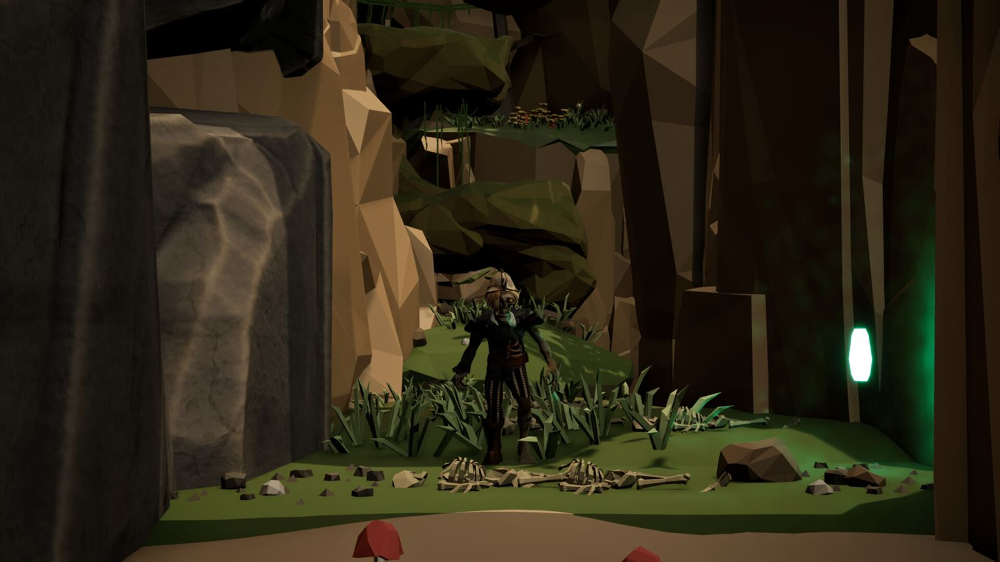
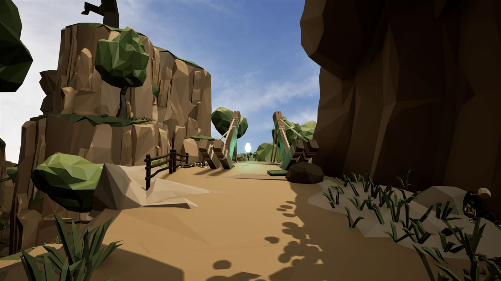
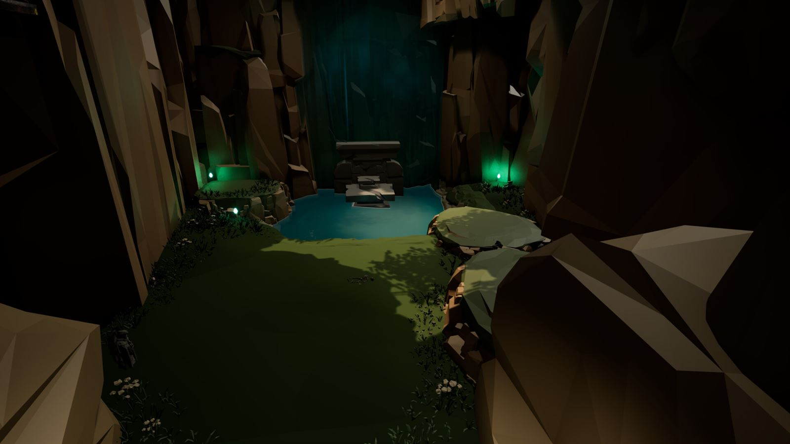
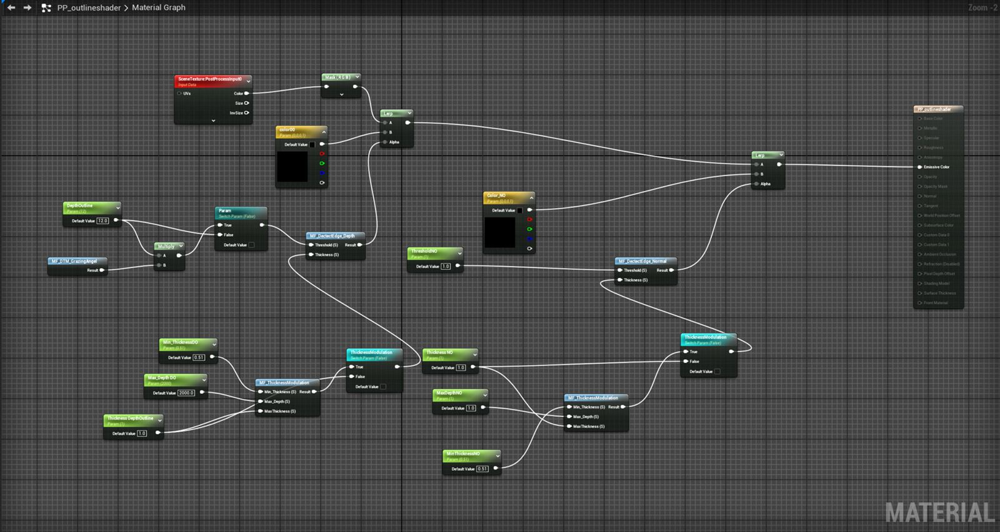

Cursebreaker: Bringer of Death
Action RPG / Hack and Slash · Level Design, Combat Spaces, Set Dressing, Lighting
A fantasy action-RPG level with souls-like combat, made with my team for our final-term project in the Advanced Game Design course at Kwantlen Polytechnic University (KPU). My goal was a memorable level that unveils new abilities as players progress and draws them into a captivating story.
My part: level design, combat spaces and lighting. I also helped with the post-process materials and the game design.
- Unreal Engine 5
- Action RPG
- Third person
- Linear
- Hack-and-slash combat
- Platformer

Gameplay
Combat spaces
It's a hack-and-slash fest that pushes players into fights, but the combat spaces reward diverse strategies: vantage points, hidden traps and secret healing items all give players options.
Platforming areas
Platforming is the main way to traverse the entire map. There are hidden areas and vantage points that can only be reached by platforming.
In the level





